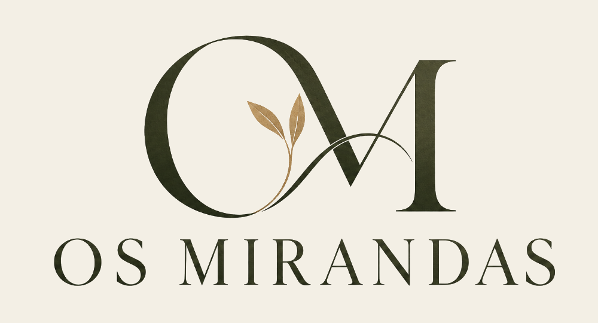
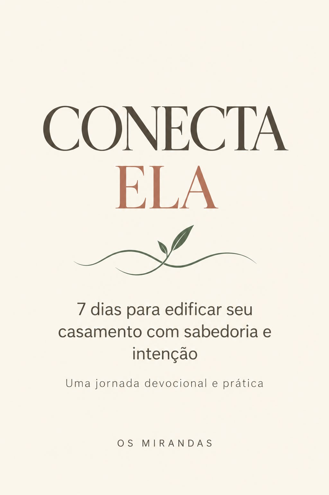
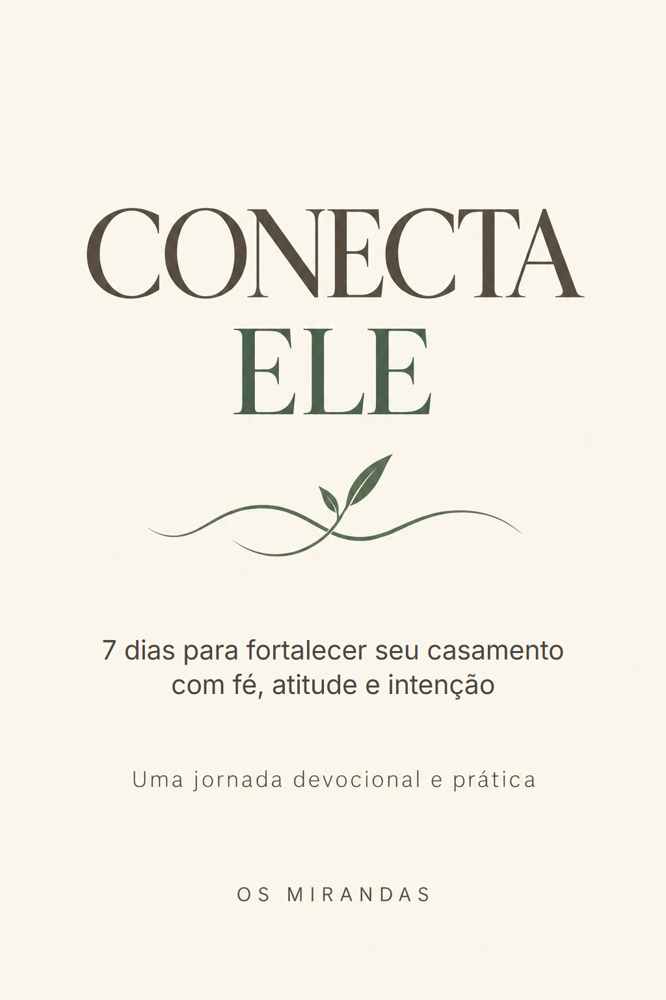

<!doctype html>
<html lang="pt-BR">
<meta charset="utf-8">
<meta name="viewport" content="width=device-width,initial-scale=1,viewport-fit=cover">
<title>Juntos ou Conectados? — Os Mirandas</title>
<meta name="description" content="Descubra quanto espaço a conexão de vocês tem encontrado na rotina. Gratuito.">
<meta property="og:title" content="Juntos ou Conectados? — Os Mirandas">
<meta property="og:description" content="Descubra quanto espaço a conexão de vocês tem encontrado na rotina. Gratuito.">
<meta property="og:image" content="https://osmirandasdigital-hash.github.io/os-mirandas/quiz/img/capa-quiz.png">
<!-- JUNTOS OU CONECTADOS? · as perguntas ficam no Formy; no fim, o Formy manda para esta página com ?r=a|b|c (a frase que a pessoa escolheu).
     Sem ?r, a página leva direto ao teste no Formy (assim o link da bio pode ser sempre este). -->
<script>
// Endereço público do teste no Formy.
const FORMY_URL = 'https://link.formy.cloud/496314af';
const r = new URLSearchParams(location.search).get('r');
if (!['a', 'b', 'c'].includes(r) && FORMY_URL) location.replace(FORMY_URL + location.search);
</script>
<link rel="preconnect" href="https://fonts.googleapis.com">
<link rel="preconnect" href="https://fonts.gstatic.com" crossorigin>
<link rel="stylesheet" href="https://fonts.googleapis.com/css2?family=Playfair+Display:ital,wght@0,400;0,500;1,400&family=Montserrat:wght@400;500;600&display=swap">
<!-- Meta Pixel "Dados" (2898104873714319): visita (PageView), qual reflexão apareceu e clique em cada produto (InitiateCheckout) -->
<script>
!function(f,b,e,v,n,t,s){if(f.fbq)return;n=f.fbq=function(){n.callMethod?n.callMethod.apply(n,arguments):n.queue.push(arguments)};if(!f._fbq)f._fbq=n;n.push=n;n.loaded=!0;n.version='2.0';n.queue=[];t=b.createElement(e);t.async=!0;t.src=v;s=b.getElementsByTagName(e)[0];s.parentNode.insertBefore(t,s)}(window,document,'script','https://connect.facebook.net/en_US/fbevents.js');
fbq('init','2898104873714319');fbq('track','PageView');
</script>
<noscript></noscript>
<style>
/* Visual único de marca (creme, verde, sálvia, terracota sólida), sem modo escuro alternativo. */
:root{
  color-scheme:light;
  --verde:#1f3a2e; --verde-2:#2c4a3c; --acento:#3d6b52;
  --creme:#f3efe5; --papel:#faf7f1; --salvia:#b7c3a6; --salvia-clara:#d3dcc4; --salvia-esc:#56664b;
  --terracota:#B47C6C; --texto:#2b2c28; --suave:#5f5b52; --linha:#d9d1c1;
  --f-disp:Montserrat,"Segoe UI",Helvetica,Arial,sans-serif;
  --f-serif:"Playfair Display",Georgia,"Times New Roman",serif;
}
*{box-sizing:border-box;margin:0;padding:0}
html{-webkit-text-size-adjust:100%}
body{background:var(--creme);color:var(--texto);font:16px/1.7 var(--f-disp);-webkit-font-smoothing:antialiased}
img{display:block;max-width:100%;height:auto}
h1,h2,h3{font-weight:500;text-wrap:balance}
p{text-wrap:pretty}
a:focus-visible{outline:2px solid var(--acento);outline-offset:3px}

.topo{display:flex;justify-content:center;padding:22px 16px 6px}
.topo img{height:clamp(110px,26vw,140px);width:auto}
main{max-width:640px;margin:0 auto;padding:12px 16px 40px}
.ola{font:600 12px/1.5 var(--f-disp);letter-spacing:.16em;text-transform:uppercase;color:var(--salvia-esc)}
h1{font:500 clamp(30px,7.4vw,42px)/1.1 var(--f-disp);letter-spacing:-.03em;color:var(--verde);margin:14px 0 22px}
main p{margin-bottom:14px}
h3{font:600 12px/1.4 var(--f-disp);letter-spacing:.2em;text-transform:uppercase;color:var(--terracota);margin:32px 0 12px}
.passo{background:var(--papel);border:1px solid var(--linha);border-left:3px solid var(--terracota);border-radius:4px 12px 12px 4px;padding:22px 22px 10px;margin-top:4px}
.passo strong:first-child{display:block;font:400 21px/1.35 var(--f-serif);color:var(--verde);margin-bottom:12px}

.oferta{margin-top:44px;background:var(--verde);color:var(--creme);border-radius:16px;padding:32px 22px 28px}
.oferta h2{font:400 clamp(25px,6vw,31px)/1.2 var(--f-serif);margin-bottom:16px}
.oferta>p{color:rgb(243 239 229/.82)}
.oferta>p b{color:var(--creme)}
.produtos{display:grid;gap:16px;margin-top:24px}
@media(min-width:600px){.produtos{grid-template-columns:1fr 1fr}}
.produto{background:var(--papel);color:var(--texto);border-radius:12px;padding:18px;display:flex;flex-direction:column}
.produto img{width:96px;aspect-ratio:2/3;object-fit:cover;border-radius:3px;box-shadow:0 10px 20px -12px rgb(0 0 0/.5);margin-bottom:16px}
.produto h4{font:600 17px/1.3 var(--f-disp);color:var(--verde);letter-spacing:.02em}
.produto .preco{font:400 22px/1.2 var(--f-serif);color:var(--terracota);margin:4px 0 10px}
.produto p{font-size:14.5px;line-height:1.6;color:var(--suave);margin-bottom:8px}
.produto p b{color:var(--verde)}
.btn{display:flex;align-items:center;justify-content:center;gap:10px;width:100%;min-height:52px;margin-top:auto;padding:0 18px;border-radius:999px;
  background:var(--verde);color:var(--creme);font:600 13px/1.25 var(--f-disp);letter-spacing:.04em;text-decoration:none;text-align:center;transition:background .2s}
.btn:hover{background:var(--verde-2)}
.fecho{text-align:center;font:italic 400 19px/1.4 var(--f-serif);color:var(--creme);margin-top:26px}
.assinatura{text-align:center;margin-top:30px;font:600 11px/1.5 var(--f-disp);letter-spacing:.2em;text-transform:uppercase;color:var(--salvia-esc)}
.refazer{display:block;width:max-content;margin:14px auto 0;font:600 12px/1 var(--f-disp);letter-spacing:.16em;text-transform:uppercase;color:var(--salvia-esc);text-underline-offset:4px}
.vazio{text-align:center;padding-top:40px}
</style>

<header class="topo"></header>
<main id="conteudo"></main>

<script>
const LINK_ELA = n => `https://pay.hotmart.com/S107878528P?checkoutMode=10&src=quiz-resultado${n}`;
const LINK_ELE = n => `https://pay.hotmart.com/I108145918V?checkoutMode=10&src=quiz-resultado${n}`;
const BONUS = 'Inclui o bônus <b>Homens da Bíblia — 5 lições de fé, caráter e atitude para fortalecer seu casamento</b>.';

const REFLEXOES = {
  a: { n: 1, titulo: 'A conexão está pedindo espaço',
    texto: ['Talvez vocês estejam vivendo uma fase em que quase tudo tem recebido atenção — menos o tempo de vocês como casal.',
      'O dia começa, as responsabilidades aparecem, os problemas precisam ser resolvidos e, quando percebem, já é hora de dormir.',
      'Isso não significa, necessariamente, que o amor acabou. Mas pode ser um sinal de que a conexão está ficando espremida entre tantas outras coisas.',
      'E aquilo que é importante também precisa encontrar espaço na agenda e nas pequenas escolhas.'],
    observar: ['Pense em quais momentos vocês têm conseguido conversar sem pressa, demonstrar carinho e prestar atenção um no outro.',
      'Talvez não seja necessário mudar tudo de uma vez.',
      '<b>Começar pequeno também é começar.</b>'],
    passo: 'Reserve 15 minutos para estar junto, sem resolver nada.',
    passoTexto: ['Sem celular. Sem conversar sobre contas, tarefas ou pendências.',
      'Escolham um momento tranquilo e compartilhem algo bom, difícil ou interessante que aconteceu nos últimos dias.',
      'A intenção não é ter uma conversa perfeita. É voltar a prestar atenção um no outro.'],
    oferta: 'Quer dar o próximo passo?',
    ofertaTexto: ['Cuidar da conexão também envolve escolhas feitas no cotidiano.',
      'Foi pensando nisso que criamos a <b>Coleção CONECTA</b>, com duas jornadas devocionais de sete dias para homens e mulheres que desejam cultivar o casamento com fé e intencionalidade.'],
    ela: 'Uma jornada devocional para mulheres casadas, com reflexões bíblicas, perguntas, atitudes práticas e orações para cultivar a conexão no dia a dia.',
    ele: 'Uma jornada devocional para homens casados, com reflexões bíblicas e atitudes práticas para fortalecer a presença, o cuidado e a parceria.' },
  b: { n: 2, titulo: 'A rotina pode estar ocupando o espaço da conexão',
    texto: ['Pela frase que você escolheu, parece que a rotina nem sempre tem deixado o espaço que vocês gostariam para o relacionamento.',
      'Entre responsabilidades, compromissos e preocupações, é possível que os momentos de conversa, carinho e presença estejam acontecendo com menos frequência.',
      'Isso não define o casamento de vocês.',
      'Mas pode ser um convite para observar o que ficou em segundo plano.',
      '<b>A conexão também é cultivada nas pequenas escolhas de cada dia.</b>'],
    observar: ['Talvez vocês não precisem de uma grande mudança.',
      'Talvez precisem de mais intenção naquilo que faz bem ao relacionamento: conversar, estar presentes, demonstrar carinho e aproveitar a companhia um do outro.'],
    passo: 'Criem um pequeno compromisso semanal de conexão.',
    passoTexto: ['Pode ser um café sem pressa, uma caminhada, uma conversa depois do jantar ou um momento de oração.',
      'O importante é que esse tempo não seja apenas o que sobrou da semana.',
      '<b>Que ele seja escolhido.</b>'],
    oferta: 'Quer transformar essa intenção em atitudes?',
    ofertaTexto: ['Criamos a <b>Coleção CONECTA</b> para ajudar homens e mulheres a cultivarem o casamento com fé e intencionalidade, mesmo em meio à rotina.',
      'São duas jornadas devocionais de sete dias, com reflexões bíblicas e aplicações práticas.'],
    ela: 'Para mulheres casadas que desejam cultivar mais presença, carinho e sabedoria no casamento por meio de reflexões, perguntas, atitudes práticas e orações.',
    ele: 'Para homens casados que desejam fortalecer a presença, o cuidado e a parceria no relacionamento.' },
  c: { n: 3, titulo: 'Vocês estão cultivando a conexão',
    texto: ['Pela frase que você escolheu, parece que vocês têm procurado preservar algo precioso: a presença um do outro no meio da vida real.',
      'Isso não significa que o casamento seja perfeito ou que vocês nunca enfrentem dias difíceis.',
      'Significa que você reconhece atitudes de carinho, escuta, parceria e cuidado fazendo parte da relação.',
      'E isso merece continuar sendo cultivado.',
      'Porque a conexão não é algo que conquistamos uma vez e nunca mais precisamos cuidar.',
      '<b>Ela continua sendo construída.</b>'],
    observar: ['Quais hábitos têm ajudado vocês a permanecer próximos?',
      'Pode ser a forma como conversam, o cuidado nos dias difíceis ou os pequenos momentos que escolhem viver juntos.',
      'Reconhecer essas atitudes também é uma maneira de protegê-las.'],
    passo: 'Celebrem algo que vocês construíram como casal.',
    passoTexto: ['Pode ser uma conquista, uma fase superada, uma viagem, uma decisão importante ou até uma lembrança simples.',
      'Conversem sobre o que aquela experiência ensinou a vocês.',
      'Nem toda conversa precisa começar com um problema.',
      'Às vezes, vale a pena parar apenas para agradecer pela história que estão vivendo.'],
    oferta: 'Um casamento que está bem também merece cuidado',
    ofertaTexto: ['A <b>Coleção CONECTA</b> não foi criada apenas para momentos difíceis.',
      'Ela também é para homens e mulheres que desejam continuar cultivando um casamento com fé, presença e intencionalidade.'],
    ela: 'Uma jornada devocional de sete dias para mulheres casadas que desejam continuar cuidando da conexão, do carinho e da parceria.',
    ele: 'Uma jornada devocional de sete dias para homens casados que desejam continuar fortalecendo a presença, o cuidado e a parceria.' },
};

const ps = lista => lista.map(t => `<p>${t}</p>`).join('');
const main = document.getElementById('conteudo');
const x = REFLEXOES[r];

if (!x) {
  main.innerHTML = FORMY_URL
    ? `<p class="vazio">Abrindo o teste…</p>`
    : `<p class="vazio">O teste JUNTOS OU CONECTADOS? volta em breve.</p>`;
} else {
  document.title = `${x.titulo} — Os Mirandas`;
  main.innerHTML = `
    <span class="ola">Sua reflexão</span>
    <h1>${x.titulo}</h1>
    ${ps(x.texto)}
    <h3>O que vale observar</h3>
    ${ps(x.observar)}
    <h3>Seu primeiro passo</h3>
    <div class="passo"><strong>${x.passo}</strong>${ps(x.passoTexto)}</div>
    <div class="oferta">
      <h2>${x.oferta}</h2>
      ${ps(x.ofertaTexto)}
      <div class="produtos">
        <article class="produto">
          
          <h4>CONECTA ELA</h4>
          <span class="preco">R$ 37</span>
          <p>${x.ela}</p>
          <a class="btn" data-produto="CONECTA ELA" href="${LINK_ELA(x.n)}">QUERO CONHECER O CONECTA ELA →</a>
        </article>
        <article class="produto">
          
          <h4>CONECTA ELE</h4>
          <span class="preco">R$ 37</span>
          <p>${x.ele}</p>
          <p>${BONUS}</p>
          <a class="btn" data-produto="CONECTA ELE" href="${LINK_ELE(x.n)}">QUERO CONHECER O CONECTA ELE →</a>
        </article>
      </div>
      <p class="fecho">♡ O amor mora nas pequenas escolhas.</p>
    </div>
    <p class="assinatura">Os Mirandas | Casamento &amp; Rotina</p>
    ${FORMY_URL ? `<a class="refazer" href="${FORMY_URL}">Refazer o teste</a>` : ''}`;
  fbq('trackCustom', 'ReflexaoTeste', { reflexao: r.toUpperCase() });
  document.querySelectorAll('[data-produto]').forEach(a => a.addEventListener('click', () =>
    fbq('track', 'InitiateCheckout', { content_name: a.dataset.produto, value: 37, currency: 'BRL', botao: `teste-${r}` })));
}
</script>
</html>
